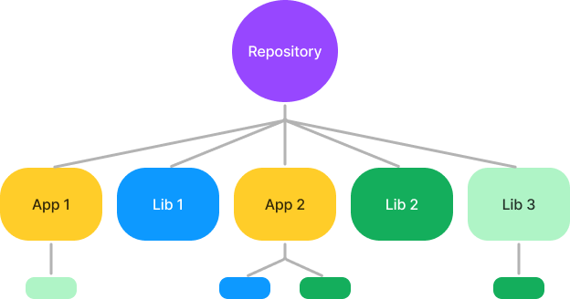
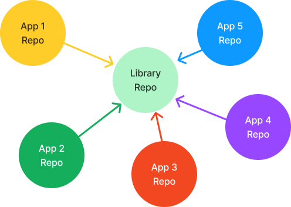
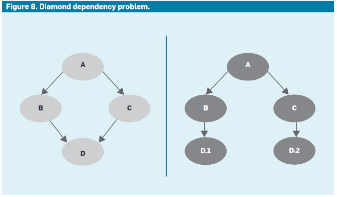

Monorepo
Module 7 - Further Exploration
Þorbergur Haraldsson
What is a monorepo
A monorepo is a single repository containing multiple distinct
projects, with well-defined relationships.

What is a polyrepo
A polyrepo is the current standard way of developing applications:
a repo for each team, application, or project.

Why is a monorepo useful
- Shared libaries of code
- Simplified dependency management
-
Better visibility and collaboration across teams
-
Easy to get a new project/app up and running.
The Diamond dependancy problem

Large monorepos
Some companies host all their code in a single repository, shared
among everyone. Monorepos can reach colossal sizes, for example: